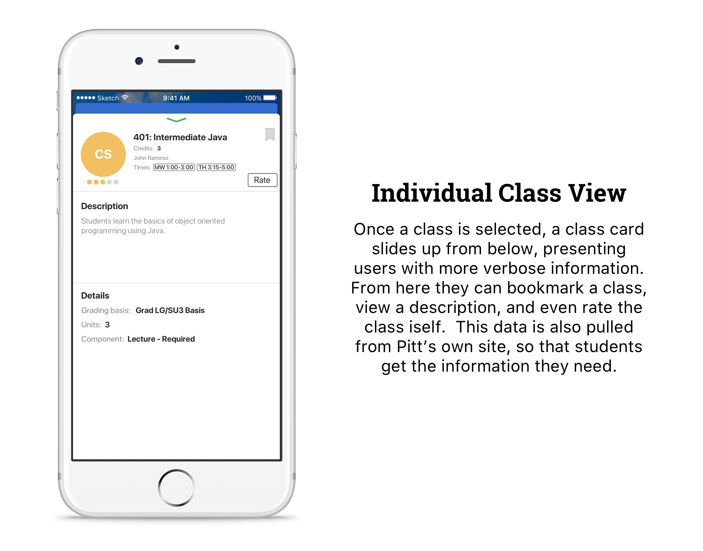

Panther Planner
I was part of a team that built and developed a course picker app for the Pitt App Challenge. Panther Planner is a prototype iOS application that allows University of Pittsburgh students to browse, search, rate, and plan courses in a manner not currently provided. The prototype was built with a heavy emphasis on a user-friendly interface, and simplicity.

- DATE: Spring 2017
- FRAMEWORKS USED: iOS, Swift, Xcode
- Git REPO: Panther-Planner